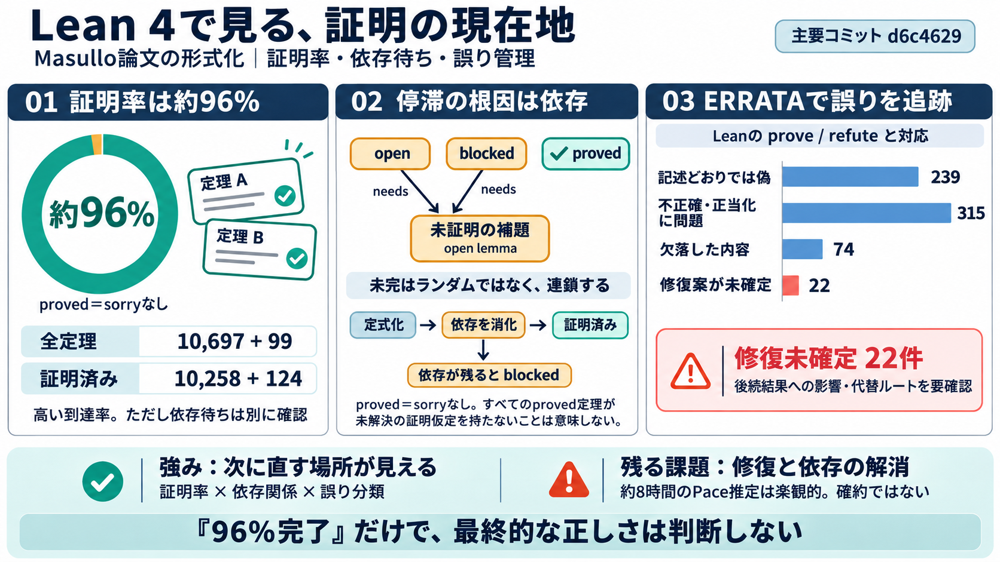

GitHub - mccorvie/riemann-masullo: Lean 4 formalization of A. M. Masullo, The Music of the Primes · GitHub
What the formalization has found. Small errors and gaps met along the way are logged in `ERRATA.md`. So far they are all…

What the formalization has found. Small errors and gaps met along the way are logged in `ERRATA.md`. So far they are all…
Separately from this project, concerns have been raised about gaps in the proof of the paper's main theorem, the trace f…
Here is the ongoing Lean formalization of the human proof of the Riemann Hypothesis Apparently, there are some minor is…
Problems found in A. M. Masullo, The Music of the Primes, while turning it into Lean. They refer to the draft of 20 Nove…
L-functions form a family that contains it, and they are the tool for studying primes in arithmetic progressions. Hecke …